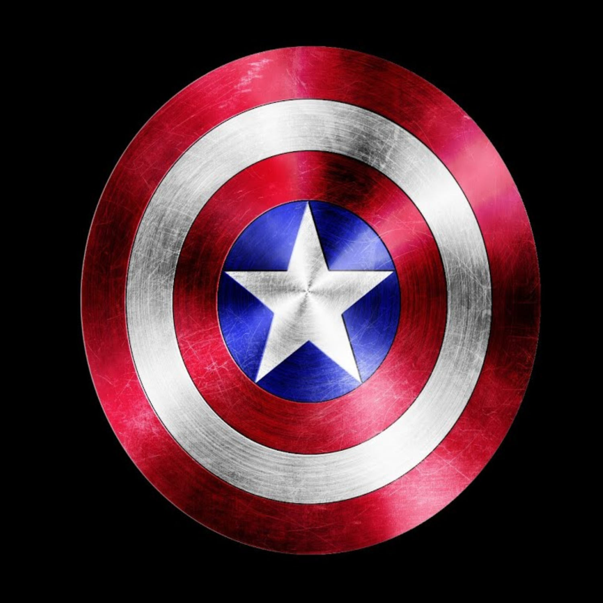

MARVEL
Тест про m a r v e l
История m a r v e l
Главная страница
фильмы m a r v e l
Персонажи m a r v e l
"Тест MARVEL"
1.Вопрос : "Сколько фаз в КВМ?"
1
2
3
4
2.Вопрос : "Кто убил родителей Тони Старка?"
Ник Фьюри
Чёрная вдова
Зимний солдат
Ванко
3.Вопрос : "Как называлась организация, которая взяла в плен Тони Старка в первом фильме о Железном человеке?"
Гидра
10 Колец
Нова
Золотое племя
4.Вопрос : "Как жители Асгарда могут попасть на Землю?"
С помощью корабля агенства Щ.И.Т
На пегасах
По радужному мосту который соеденяет Землю с Асгардом
Только с помощью молота Тора
5.Вопрос : "Как доктор Стренж стал магом?"
Стивен работал в полиции и что бы защищать людей он стал магом
Стивен работал в лабораториии и в ходе одного эксперемента произошла ошибка и он получил супер силы
Стивен Стрэнж был хирургом, но в аварии его дочь получила опасные травмы, и что бы ее вылечить он стал магом
Стивен Стрэнж был нейрохирургом, но в аварии получил серьезные травмы рук, что бы излечится отправился в Камортаж где и решил стать магом
6.Вопрос : "Кто в фильме «Мстители» отправляется в Индию, чтобы заручиться поддержкой Брюса Бэннера?"
Стив Роджер
Черная вдова
Тор
Тони Старк
7.Вопрос : "Какой из камней бескончности находился на лбу Вижена?"
Камень души
Камень разума
Камень реальности
Камень пространства
8.Вопрос : "Чем занимался человек-муравей до того, как в его руках оказался костюм супергероя?"
Спасателем
Воровством
Был таксистом
Был бездомным
.jpg)